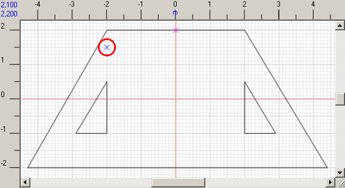

The plot outline is drawn with solid lines. If you show accuracy, you can mark borders and drains by dotted lines on the plot. Since the drawing by non-solid line is potentially dangerous for the plot, and borders and drains processing is currently not supported by the program, you cannot draw using dotted lines. Use solid lines and then change necessary lines with dotted ones.
The plot is scalable in meters, centimeters or millimeters. You can configure this parameter in the settings. If the plot is too large and does not fit the display, zoom it out using but note this may influence your accuracy, since it will be harder to hit the required point. For more details please view the Scale article.
You should pay special attention to when joining the lines together since this factor greatly influences the accuracy of the plottage and paving of the plot. If the real plot size is measured with errors and you cannot draw the closed outline using the specified dimensions, then the program uses a 50 mm spacings between neighboring lines. You can easily modify this value in the settings.
|
Advice. View the Drawing graphic objects article for details about using the mini-display.
Practical method: Start drawing the plot from the line along the wall, abutment piece, gate, and any long or axial plot line (or any line that your client will pay your attention to). Consider this line as basic and direct it across or upright. If none of the borders meet your requirements, draw a temporary one that will fit them and do not delete it as soon as you complete the draft. Orient other lines according to the basic one, without paying much attention to orient lines according to the axes of coordinates. |
If the plot size is greater than the visible part of the workspace, then modify the scale of the draft.
Inside of the plot you can draw closed outlines that will not be paved, e.g. flowerbeds.
After the outline is ready, set the point where the program will start paving the plot: click
Here is the example of a plot:

|
Note. In the example above the reference point is random, though more often it is set on the border or in the corner of the plot.
|
Now we can pass to the next step - selecting the pattern.